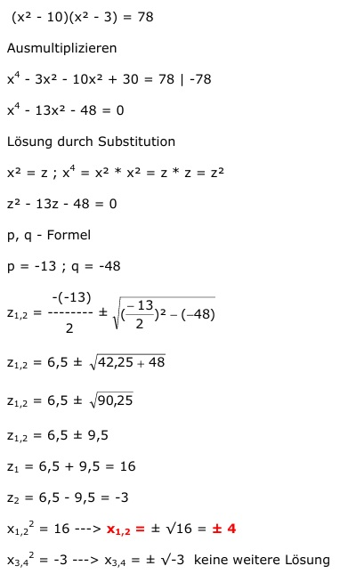

Quadratische Gleichungen Aufgabe 71 (x² - 10)(x² - 3) = 78 Ausmultiplizieren x4 - 3x² - 10x² + 30 = 78 | -78 x4 - 13x² - 48 = 0 Lösung durch Substitution x² = z ; x4 = x² * x² = z * z = z² z² - 13z - 48 = 0 p, q - Formel p = -13 ; q = -48  z1,2 = 6,5 ± z1,2 = 6,5 ± z1,2 = 6,5 ± 9,5 z1 = 6,5 + 9,5 = 16 z2 = 6,5 - 9,5 = -3 x1,22 = 16 ---> x1,2 = ± √16 = ± 4 x3,42 = -3 ---> x3,4 = ± √-3 keine weitere Lösung.